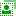

前景选择工具 Foreground Select Tool
此工具没有快捷键。
前景选择工具及其工具选项
前景选择工具(  )可以提取活动图层或选区的前景(驿窗注：注意是前景不是前景色)。选区创建完成后，如果反转选区，相当于选取了背景。此工具是通过蒙版来操作的。
{kind=link}
创建选区的方法：(此工具部分类似自由选择工具)
选中 前景选择工具 后，可以像自由选择工具那样在图像上创建一个粗略的选区，然后按Enter键创建蒙版。
此工具点击第一个点开始，窗口右上角会显示 前景选择 框；
按Enter键之前，可以按Backspace键修改选区；
按Enter键后，会显示蓝色蒙版。此时我们在前景区域中画一条连续的线条，线条经过的地方会被重点提取并保留。
深蓝色被定义为背景，浅蓝色被定义为前景，前景即我们要选择的区域；
不要切换工具，操作过程中一直使用 前景选择工具；
画连续线条的时候，线条的颜色无所谓；
画连续线条的时候，不要画到背景区域；
GIMP会根据连续线条自动计算您最终需要的前景区域；
在前景区域中画完一条连续的线条后，点击 前景选择 框中的 “预览蒙版”。
点击“预览蒙版”后，生成的其实是一个蓝色蒙版，您可以按操作蒙版的方式，用绘画工具对蒙版区域进行编辑，以修改选区范围；
修改完成后，点击 前景选择 框中的“选择”按钮，即可完成选区创建，蚂蚁线出现。
辅助快捷键
前景选择工具创建选区的过程中，按Backspace键可以删除最后一个点，按Esc键可以删除所有的点，按Ctrl键可以限制角度为15°的整数倍。
(如果想把选区保存起来供以后使用，请参考工具箱→矩形选择工具→保存选区提示)
工具选项
这里提供了更多的细节控制。
(没找到工具选项？请参考工具箱→矩形选择工具→如何显示工具选项)
模式：模式会决定新创建的选区与已经存在的选区如何组合，有四个选项：
替换：已经存在的选区会被删除，只保留新创建的选区。
合并：新创建的选区和已经存在的选区相加，相当于并集。
减去：从已经存在的选区减去新创建的选区，相当于差集。
相交：保留新创建的选区和已经存在的选区的重合部分，未重合部分全部删除，相当于交集。
羽化边缘：可以融合边缘，使选区与背景过度更平滑。默认半径为10像素。
绘画模式：
绘制前景：绘制部分会成为前景内容。
绘制背景：绘制部分会成为背景内容。
绘制未知：将背景中的像素添加到你的选区中。
笔廓宽度：画线条时笔刷的尺寸。
重置按钮：可以把笔刷尺寸重置为默认值10；
预览模式：
颜色：您可以根据图像的色调来调整蒙版颜色，防止颜色相近导致的操作困难，点击下方的色板即可选择颜色。
灰度：以黑白的方式预览蒙版结果。这种预览类似于图层蒙版，在前景色和背景色相差不大的图像中比较有效。
引擎：您可以使用全局抠图工作，然后使用莱文抠图改进结果。
迭代次数：如果选择全局抠图，那么会显示此选项，提高数值可能会改善结果。
级别：要使用的降采样级数。数字越大，处理速度越快，但会占用更多内存。默认为2级。(仅莱文抠图)
激活级别：进行求解的级别数。数字越大，选择范围越大，但处理速度会减慢。将此数字设置得高于”级数”不会有任何影响。默认为2个有效级别(仅莱文抠图)
工具选项窗口底部有四个按钮，一些常用的参数可以保存起来供以后使用：
保存工具预设：把当前的参数保存起来，以后可以直接调用；可以保存多个；保存时可以命名。
恢复工具预设：调用以前保存的参数。
删除工具预设：删除以前保存的参数。
重置到默认值：把当前参数重置到GIMP默认值。